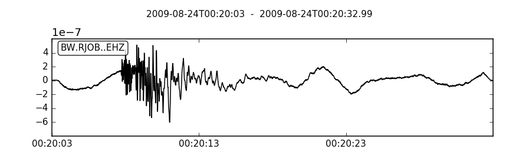
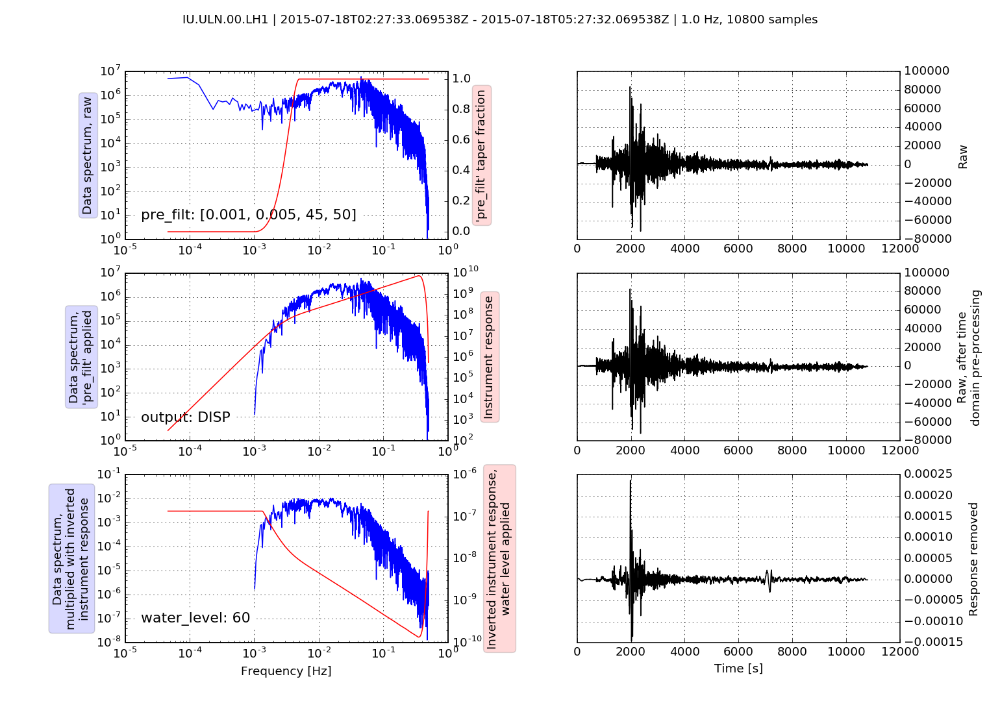

obspy.core.trace.Trace.remove_response¶
-
Trace.remove_response(inventory=None, output='VEL', water_level=60, pre_filt=None, zero_mean=True, taper=True, taper_fraction=0.05, plot=False, fig=None, **kwargs)[source]¶ Deconvolve instrument response.
Uses the adequate
obspy.core.inventory.response.Responsefrom the providedobspy.core.inventory.inventory.Inventorydata. Raises an exception if the response is not present.Note that there are two ways to prevent overamplification while convolving the inverted instrument spectrum: One possibility is to specify a water level which represents a clipping of the inverse spectrum and limits amplification to a certain maximum cut-off value (water_level in dB). The other possibility is to taper the waveform data in the frequency domain prior to multiplying with the inverse spectrum, i.e. perform a pre-filtering in the frequency domain (specifying the four corner frequencies of the frequency taper as a tuple in pre_filt).
Note
Any additional kwargs will be passed on to
obspy.core.inventory.response.Response.get_evalresp_response(), see documentation of that method for further customization (e.g. start/stop stage).Note
Using
remove_response()is equivalent to usingsimulate()with the identical response provided as a (dataless) SEED or RESP file and when using the same water_level and pre_filt (and options sacsim=True and pitsasim=False which influence very minor details in detrending and tapering).Example
>>> from obspy import read, read_inventory >>> st = read() >>> tr = st[0].copy() >>> inv = read_inventory() >>> tr.remove_response(inventory=inv) <...Trace object at 0x...> >>> tr.plot()
(Source code, png, hires.png)
Using the plot option it is possible to visualize the individual steps during response removal in the frequency domain to check the chosen pre_filt and water_level options to stabilize the deconvolution of the inverted instrument response spectrum:
>>> from obspy import read, read_inventory >>> st = read("/path/to/IU_ULN_00_LH1_2015-07-18T02.mseed") >>> tr = st[0] >>> inv = read_inventory("/path/to/IU_ULN_00_LH1.xml") >>> pre_filt = [0.001, 0.005, 45, 50] >>> tr.remove_response(inventory=inv, pre_filt=pre_filt, output="DISP", ... water_level=60, plot=True) <...Trace object at 0x...>
(Source code, png, hires.png)
Parameters: - inventory (
Inventoryor None.) – Station metadata to use in search for adequate response. If inventory parameter is not supplied, the response has to be attached to the trace withTrace.attach_response()beforehand. - output (str) –
Output units. One of:
"DISP"- displacement, output unit is meters
"VEL"- velocity, output unit is meters/second
"ACC"- acceleration, output unit is meters/second**2
- water_level (float) – Water level for deconvolution.
- pre_filt (list or tuple of four float) – Apply a bandpass filter in frequency domain to the data before deconvolution. The list or tuple defines the four corner frequencies (f1, f2, f3, f4) of a cosine taper which is one between f2 and f3 and tapers to zero for f1 < f < f2 and f3 < f < f4.
- zero_mean (bool) – If True, the mean of the waveform data is subtracted in time domain prior to deconvolution.
- taper (bool) – If True, a cosine taper is applied to the waveform data in time domain prior to deconvolution.
- taper_fraction (float) – Taper fraction of cosine taper to use.
- plot (bool or str) – If True, brings up a plot that illustrates how the data are processed in the frequency domain in three steps. First by pre_filt frequency domain tapering, then by inverting the instrument response spectrum with or without water_level and finally showing data with inverted instrument response multiplied on it in frequency domain. It also shows the comparison of raw/corrected data in time domain. If a str is provided then the plot is saved to file (filename must have a valid image suffix recognizable by matplotlib e.g. ‘.png’).
- inventory (
{kind=link}
{kind=link}
{kind=link}
{kind=link}